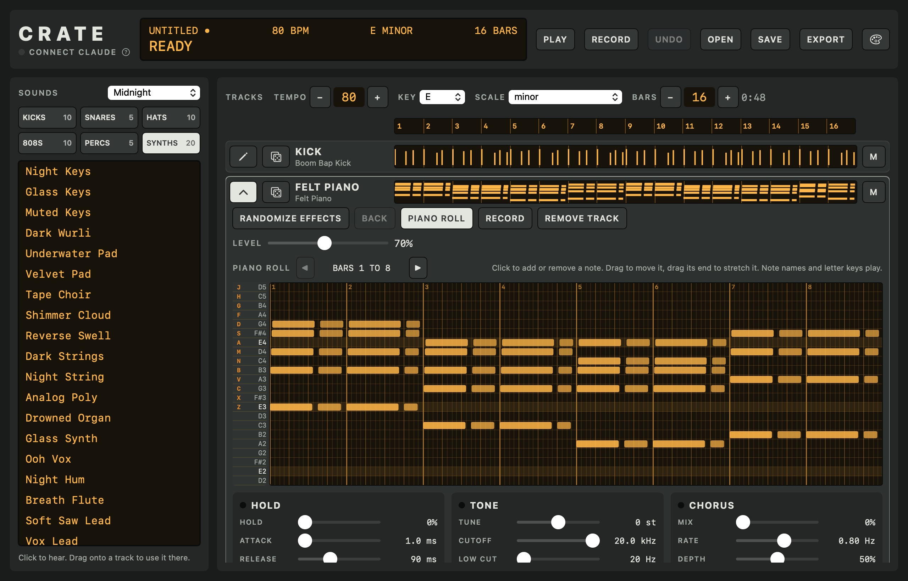

Ask for a part. Pick from three.
Open Crate, connect Claude Code, and say what you want in plain words. Each new part comes back as three versions under its track. Click one to hear it in place, keep it, or ask for a change.
You don't need Claude to use it. Click notes into the piano roll, or play them on the letter keys.
- an 8 bar melody in C# minor
- three versions of a bass that follows the kick
- lay it out as intro, melody, chorus, melody, close
- master it and give me three options
Roll the colors
Every color in the window is yours to set, or let the dice pick. These are palettes the app rolled itself. Choose one and this page wears it too.

262 sounds, made from scratch
Five packs of drums, 808s, pads, voices and synths. Every sound is synthesized, and they are all tuned to one note so they move together when the key changes.
Tap a pad to hear one, or use the key printed on it.
| Starter | 22 | The basics |
|---|---|---|
| Lofi | 60 | Dusty drums, soft subs, keys |
| Midnight | 60 | Late-night R&B and trap |
| Afterglow | 60 | Retro 80s and synthwave |
| Blackout | 60 | Dark, hard trap |
Set it up
Crate is built on your own Mac from the source. There is no signed download yet. You need macOS 14 or later and Apple's command line tools.
-
Build it
git clone https://github.com/okekedev/crate && cd crate && ./make-app.sh && open Crate.app -
Connect Claude Code, if you want it to write for you
claude mcp add --transport http crate http://127.0.0.1:8790/mcpCrate only accepts connections from the same Mac, and only while it is open.
-
Ask for a part
Start with a key and a length, like the examples above.